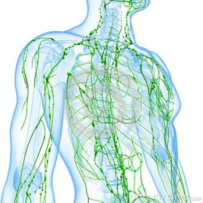
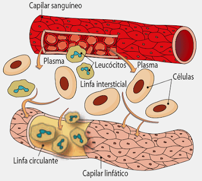
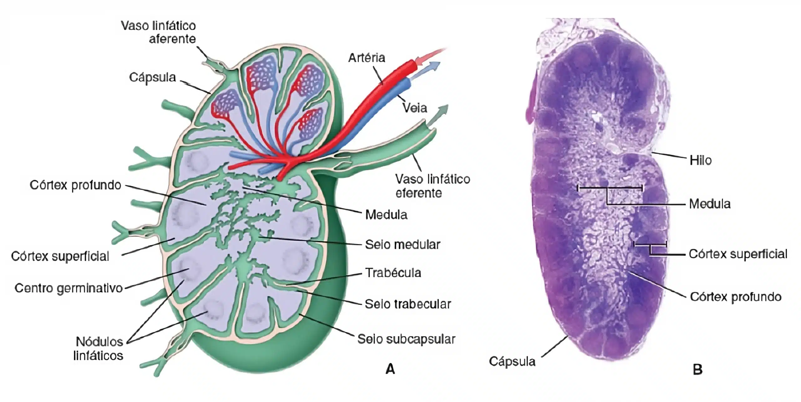
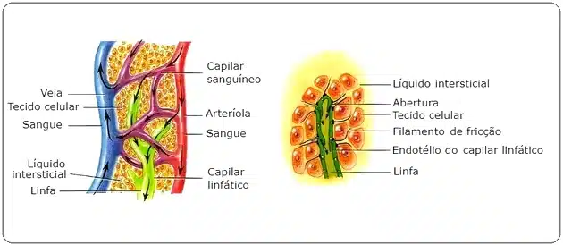
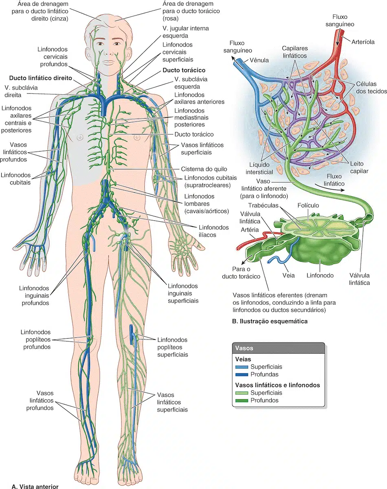
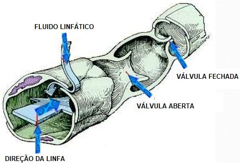
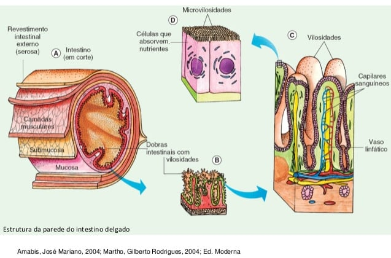
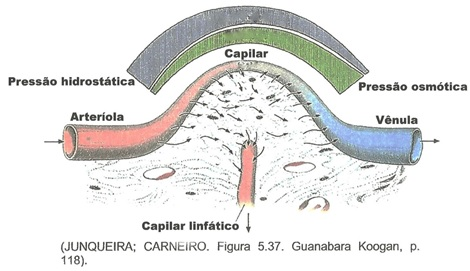

O sistema linfático constitui uma via acessória pela qual os líquidos podem fluir dos espaços intersticiais para o sangue.
E, mais importante de tudo, os vasos linfáticos podem transportar, para fora dos espaços teciduais, proteínas e grandes materiais particulados, nenhum dos quais pode ser removido diretamente por absorção pelo capilar sanguíneo.

Essa remoção de proteínas dos espaços intersticiais é uma função absolutamente essencial, sem a qual morreríamos dentro de cerca de 24 horas.
Linfonodos
Os linfonodos ou também gânglios linfáticos são pequenos órgãos perfurados por canais que existem em diversos pontos da rede linfática, uma rede de ductos que faz parte do sistema linfático.
Atuam na defesa do organismo humano e produzem anticorpos.
A linfa, em seu caminho para o coração, circula pelo interior desses gânglios, onde é filtrada.
Partículas como vírus, bactérias e resíduos celulares são fagocitadas pelos linfócitos e macrófagos existentes nos linfonodos.
Quando o corpo é invadido por microorganismos, os linfócitos dos linfonodos, próximos ao local da invasão, começam a se multiplicar ativamente para dar combate aos invasores.
Com isso, os linfonodos incham, formando as ínguas.
É possível, muitas vezes, detectar um processo infeccioso pela existência de linfonodos inchados.


Canais linfáticos do corpo
Com exceção de alguns, quase todos os tecidos do corpo têm canais linfáticos que drenam o excesso de líquido diretamente dos espaços intersticiais.
As exceções incluem as partes superficiais da pele, o sistema nervoso central, as partes mais profundas dos nervos periféricos, o endomísio dos músculos e os ossos.
Entretanto, até mesmo esses tecidos têm diminutos canais intersticiais, denominados pré-linfáticos, pelos quais o líquido intersticial pode fluir; esse líquido acaba por fluir para os vasos linfáticos ou, no caso do cérebro, flui para o liquor e daí diretamente de volta para o sangue.

Praticamente toda a linfa da parte inferior do corpo – até mesmo a maior parte da linfa das pernas – sobe até a parte torácica e desemboca no sistema venoso na junção da veia jugular interna esquerda com a veia subclávia.
A linfa do lado esquerdo da cabeça, do braço esquerdo e partes da região torácica também passa para o ducto torácico antes de desembocar nas veias.
A linfa do lado direito do pescoço e da cabeça, do braço direito e de partes do tórax chega ao ducto linfático direito, que desemboca, então, no sistema venoso na junção da veia subclávia direita com a veia jugular interna.

Os capilares linfáticos e sua permeabilidade
A maior parte do líquido que filtra dos capilares arteriais flui por entre as células e é finalmente reabsorvida pelas extremidades venosas dos capilares sanguíneos; mas cerca de um décimo do líquido passa, em vez disso, para os capilares linfáticos, retornando ao sangue pelo sistema linfático, e não pelos capilares venosos.
A diminuta quantidade de líquido que volta à circulação por meio dos vasos linfáticos é extremamente importante porque substâncias de alto peso molecular, tais como as proteínas, não podem ser reabsorvidas pelos capilares venosos mas podem passar para os capilares linfáticos quase que totalmente sem oposição.
A razão disto é a estrutura especial dos capilares linfáticos.
As figuras mostram as células endoteliais do capilar presas por filamentos de ancoração ao tecido conjuntivo circundante.


Nas junções entre as células endoteliais adjacentes, a borda de uma célula endotelial em geral se superpõe à borda da célula adjacente, de tal forma que a borda superposta fica livre para dobrar-se para dentro, formando, assim, uma diminuta válvula que se abre para o interior do capilar.
O líquido intersticial, juntamente com suas partículas suspensas, pode forçar a válvula a abrir-se e fluir diretamente para o capilar linfático.
Mas esse líquido tem dificuldade de sair do capilar após ter nele penetrado, porque qualquer refluxo vai fechar a válvula de aba.
Assim, os vasos linfáticos têm válvulas bem na extremidade dos capilares linfáticos terminais, bem como válvulas ao longo de seus vasos maiores até o ponto em que eles desembocam na circulação sanguínea.
Formação da linfa
A linfa deriva do líquido intersticial que flui para os vasos linfáticos.
Por esta razão, a linfa, quando começa a sair de cada tecido, tem quase a mesma composição do líquido intersticial.
Estrutura especial dos capilares linfáticos que permite a passagem de substâncias com alto peso molecular de volta à circulação.
A concentração de proteínas no líquido intersticial da maioria dos tecidos é, em média, de cerca de 2 g/dl e a concentração proteica da linfa que flui desses tecidos é muito próxima deste valor.
Por outro lado, a linfa formada no fígado tem concentração de proteínas de até 6 g/dl e a formada no intestino tem concentração de proteínas de até 3 a 4 g/dl.
Como cerca de dois terços de toda a linfa derivam do fígado e do intestino, a linfa torácica, uma mistura de linfa de todas as áreas do corpo, tem geralmente concentração de proteínas de 3 a 5 g/dl.
O sistema linfático também é uma das principais vias de absorção de nutrientes a partir do tubo gastrintestinal, sendo responsável principalmente pela absorção dos lipídios.
De fato, após uma refeição rica em lipídios, a linfa do duto torácico contém até 1 a 2%de lipídios.
Finalmente, até mesmo grandes partículas, tais como bactérias, podem abrir seu caminho por entre as células endoteliais dos capilares linfáticos e, desse modo, passa para a linfa.
Quando a linfa passa pelos linfonodos, essas partículas são removidas e destruídas.
Quando o sangue passa pelos capilares, parte do líquido que o compõe extravasa pela parede celular e se espalha entre as células próximas, nutrindo-as e oxigenando-as.
As células também fazem trocas de substâncias com o meio e eliminam gás carbônico e excreções no líquido extravasado, chamado de líquido tissular.

Pressão hidrostática x pressão osmótica
Pressão hidrostática: é a pressão decorrente da compressão do líquido intravascular
Pressão osmótica (coloidosmótica): é a pressão decorrente das propriedades coligativas da água, ou, de uma outra maneira, devido à diferença de H2O.
Coloidosmótica: solutos “impermeáveis” (pouco permeáveis) à barreira endotelial, ou seja, basicamente, são as proteínas plasmáticas: “colóide”
À medida em que o sangue extravasa, a pressão hidrostática cai dentro do sistema vascular, e uma outra força entra em ação, que é a pressão osmótica.
O sangue, por perder água, vai estar mais concentrado e vai começar a puxar a água de volta.
Vamos observar um fenômeno interessante.
Na área de entrada do sangue no sistema arterial, a pressão hidrostática será maior do que a pressão osmótica.
Porém, na hora em que o sangue está saindo do sistema, a pressão hidrostática será menor do que a osmótica.
